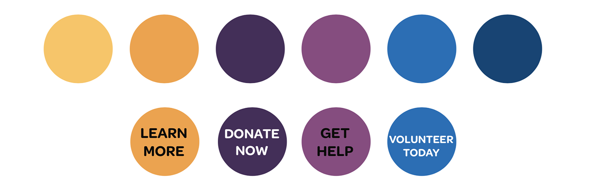
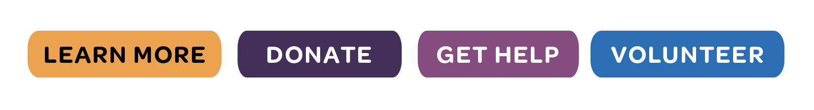

Call to Action
I have put together several examples of call to action buttons to reach out to my client's audience.
Original:

My call to action consists of four main buttons as listed above. The commands will stay the same, but the type color and button color may change to any found within the style tile. I chose to utilize circles to tie the site in with the national foundation’s site, while at the same time providing the local organization its own identity. Removing the hard edges found on the current website gives the visitors a more welcoming and empathetic experience.The “Learn More” button provides an easily accessible path for visitors to an overview of information on Family Promise of the Midlands. Upon clicking on this button the user is presented with a summary of who the organization is, what it does, how to get involved (volunteer/donate), and how one may seek help.
The “Volunteer Today” button will lead the user to a page complete with information about getting involved with Family Promise. This includes how to volunteer as an individual at the day center, as well as how a local church congregation can become a host site.
A critical component to Family Promise’s success is donations, monetary and goods. The “Donate Now” button provides clear access to instructions on how the community can assist the organization with their gifts.
“Get Help”...the main mission of Family Promise is to provide help to those in need. While the majority of those that Family Promise caters to do not have access to a computer, the site does still need to clearly provide instructions on how those in need can take advantage of the organization’s services. The “Get Help” button will lead to a page containing instructions on how a family can request help and also how a concerned person can seek help on behalf of someone else.
Revised:

WORDS
Style Tile
I have created this graphic to convey the general design and style elements as well as the feel of the website. A mock up of the homepage website for Family Promise of the Midlands is included.
Original:

Revised: